Subscribe
Subscribe
What is the size of a parallelogram?
Not all solutions of a problem are created equal. There are many ways to show how the size of a parallelogram can be found: one solution is very simple, but not general enough; some are general but complex, and some are general, simple and beautiful.
The simple case
When looking for a clear geometrical approach to find the area of a parallelogram I first thought about the simplest case, one like this:

The solution is rather easy, once you think about how it
compares with the rectangle of base  and height
and height  :
:
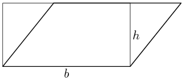
You can remove the green triangle on the right and put it on
the left, building a rectangle of height and width
that has exactly the same area as the original parallelogram:
and we know how to compute the area of a rectangle,  .
.
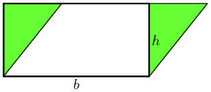
This is an interesting result: it tells you that you can
stretch your parallelogram as much as you want and, as long
as you keep and constant it will have the same area.
As much as we want? Well, we don't actually know that. It turns out that, as you stretch, you reach a point where the argument above does not hold anymore. What would you say about this parallelogram?
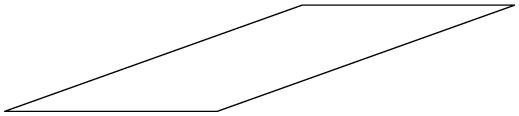
It has the same and as the previous one, and maybe
its area is the same, but we haven't showed it yet: the
argument above does not apply to it, as we cannot cut the
triangle on the right an put it on the left to build the
rectangle. It just doesn't fit:
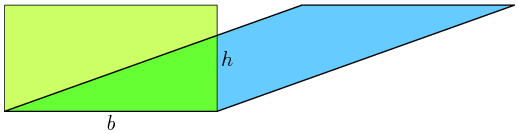
You could of course rotate it, lay it on the long side, and
you are in the first case. But at this point the goal is not
only to know its area: it is to show that it should be
. So we needed another argument, and an argument
I found. But, as it turns out, it was clear but long, not
very pretty and therefore not satisfying.
The very slanted parallelogram
Talking about it over lunch with some friends a couple of better solutions appeared. Jaime Fernández and Ján Morovič quickly came up with a smart way to convert the new problem to the previous one, and then Utpal Sarkar, aka Doetoe, thought of a simple and very elegant solution.
I encourage you to think about it yourself before looking at the solutions, and then read them in order: first the long one, then the smart one, then the elegant (and best) one.
The long and winding road
The hypothesis is that it should be possible to fit this
parallelogram into the times rectangle, so the area
of the parallelogram should be  . One way to go
about it is to stretch the rectangle so that it fills the
gap:
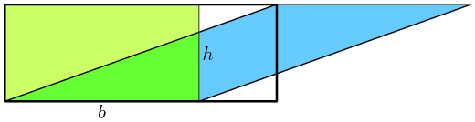
. One way to go
about it is to stretch the rectangle so that it fills the
gap:
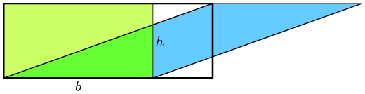
Now it's clear that the blue triangle on the right is exactly the same size of the dark green triangle, so we can move it to form a small rectangle: 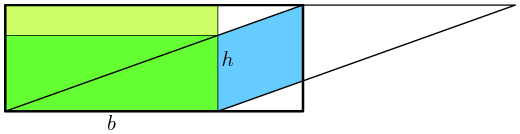
We have still the light green rectangle to cover, and the
blue area to be fit. If the hypothesis was right, and the
area of the original parallelogram was the same as the area
of the rectangle, the blue area should fit
exactly in the light green rectangle. One way to see if
this is true is to consider these two triangles:
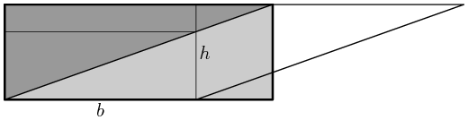
They are identical. Each of them contains one of the areas
we want to show that are equal, plus an identical medium
triangle (dark green), and an identical small triangle
(gray):

So the light green and the blue areas must be equal, and we have been able to fit exactly all the blue into the green.
Jaime and Ján's solution
It is smarter and much simpler. Take again the original parallelogram 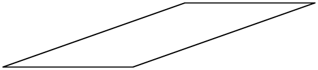
and cut it like this 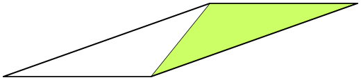
We can move the green triangle to the left, like this

We have just constructed one parallelogram that has the exact same area as the original one, but is less slanted. In fact, it is a simple parallelogram for which we already know how to calculate the area.
If the original slant had been bigger we would have
required more than one such transformation to reach the
simple case; but we'll always reach it, so we can always
reduce the problem to another that we know how to solve.
And the solution for this simplest case is , so
we know that the slanted parallelogram is also .
Doetoe's solution
Doetoe was able to come up with an even simpler and more elegant solution by looking, literally, out of the box. Take the original slanted parallelogram 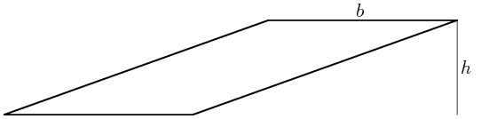
and draw a box around it:

Now just slide the lower right triangle until it finds its match with the other one: 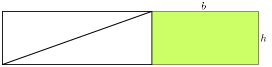
There you have it, so general and beautiful and simple.
blog comments powered by Disqus